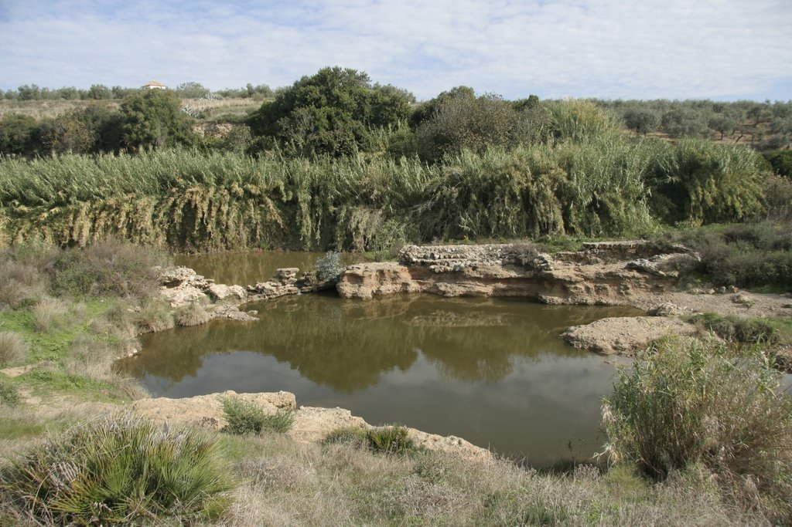

La Zua es un patrimonio historico de la localidad de Gerena que fue formada en un principio por los romanos y se ha usado a lo largo de la historia como paraje natural para el ocio, también es una zona con un denso ecositema de animales, donde podemos encontrarnos desde tortugas leprosas hasta zarros o incluso jabalíes.
La zua consta de aguas corrientes cuyo caudal nunca para de suministrar agua, y a su vez peces de río de todos los tamaños y colores. Esta charca no es más que una parada de el río Guadiamar uno de los principales afluentes del guadalquivir cuya fauna es aún mayor.
Como ya se ha mencionado anteriormente el río Guadiamar abarca una gran fauna a lo largo de su recorriedo, pero también contiene algunos parajes similares a la zua que son dignos de mencionar.
En río podemos encontratnos sitios como la presa perdida,el puentey la fuente bermeja.
Para poder alojarce cerca de la zona de la Zua se puede alquilar una casa de campo llamada, El molino perdido, cual es un molino abandonado del siglo 17 el cual se usaba para moler el trigo, hoy en día está restaurado y preparado para servir al huesped. También podemos encontrar arriba del transcurso del río, al lado contrario, podemos encontrar la "Casa Rosario" la cual siempre está alumbrando el preciosos río.